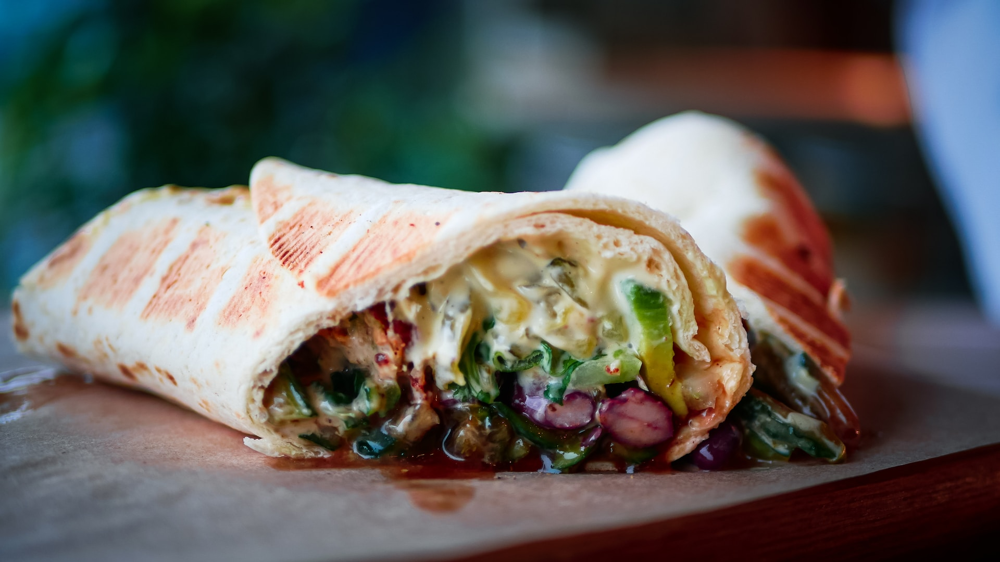

Shawarma

Description
What Is Shawarma? Shawarma is thinly sliced cuts of meat,
like chicken, beef, goat, lamb, and sometimes turkey rolled
into a large piece of flatbread or pita that has been steamed
or heated. Inside the pita, foods like hummus, tahini, pickles,
vegetables, and even french fries are added
Ingredients
For the marinade:
- Boneless chicken thighs(skinless)
- 1/2 cup Malt Vinegar
- 1/4 cup Plain yogurt
- 1 tbsp Vegetable oil
- to taste Salt and pepper
- 1/4 tsp Freshly ground cardamom
- 1 tsp All spice powder
For the sauce:
- 1/2 cup Tahini
- 1/4 cup Plain yogurt
- 1/2 tsp Garlic (minced)
- 2 tbsp Lemon juice
- 1 tbsp Olive oil
- 1 tbsp Fresh parsley, chopped
- to taste Salt and pepper
For plating:
- 4 medium Tomatoes, sliced
- 1/2 cup Onion, sliced
- 4 cups Lettuce, shredded
- 8 Pita bread rounds
Steps:
-
In a glass baking dish, mix together the malt vinegar, 1/4 cup yogurt, vegetable oil, mixed spice,
cardamom, salt and pepper.
-
Place the chicken thighs into the mixture and turn to coat. Cover and marinate in the refrigerator
for at least 4 hours or overnight.
-
Preheat the oven to 350 degrees F (175 degrees C).
-
n a small bowl, mix together the tahini, 1/4 cup yogurt, garlic, lemon juice, olive oil, and parsley.
-
Season with salt and pepper, taste, and adjust flavors if desired. Cover and refrigerate.
-
Cover the chicken and bake in the marinade for 30 minutes, turning once.
-
Uncover, and cook for an additional 5 to 10 minutes, or until chicken is browned and cooked through.
- Remove from the dish, and cut into slices.
- Place sliced chicken, tomato, onion, and lettuce onto pita breads.
- Roll up, and top with tahini sauce.